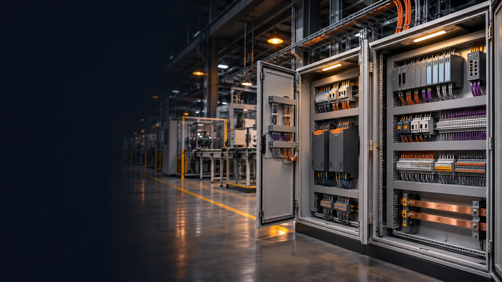
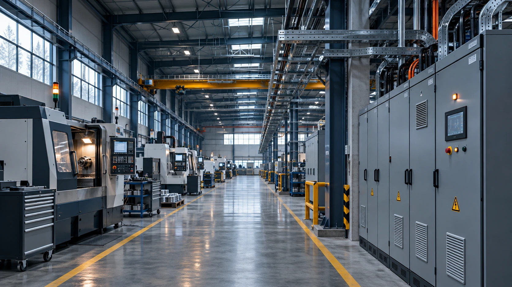

01
Mühendislik, proje & taahhüt
Mühendis kadromuzla elektrik ve elektronik projelendirme, teknik planlama ve uygulama taahhüdü.

YAYBOZ ELEKTRİK & OTOMASYON
30 yıllık tecrübe ve mühendis kadromuzla;
projeden uygulamaya, elektrikten otomasyona.

Temsili tesis görseliHAKKIMIZDA
Yayboz Elektrik olarak elektrik ve elektronik mühendisliği, proje, taahhüt ve otomasyon alanlarında hizmet veriyoruz. Mühendis kadromuz ve 30 yıllık tecrübemizle, sanayi bölgelerinden fabrikalara, iş yerlerinden konutlara kadar elektrik işlerinizi üstleniyoruz.
Projelendirme, malzeme tedariği, pano montajı ve tesisat uygulamasını; arıza teşhis, bakım, onarım ve servis hizmetleriyle tamamlıyoruz.
NELER YAPIYORUZ?
Bir makineden bir üretim tesisine kadar.
Mühendislik, uygulama ve servis aynı çatı altında.
Mühendis kadromuzla elektrik ve elektronik projelendirme, teknik planlama ve uygulama taahhüdü.
PLC, HMI ve SCADA uygulamaları; makine ve üretim süreçlerine özel kontrol sistemleri.
Dağıtım, kumanda ve kompanzasyon panolarının projelendirilmesi, imalatı ve montajı.
Sanayi bölgeleri ve üretim tesisleri için elektrik altyapısı, makine bağlantıları ve saha uygulamaları.
Ev, ofis ve ticari alanlarda elektrik tesisatı, aydınlatma ve elektrik altyapısının yenilenmesi.
Elektrik ve otomasyon sistemlerinde arıza tespiti, periyodik bakım, onarım ve teknik servis.
Elektrik ve otomasyon malzemelerinin alım satımı; projenize uygun ürün ve ekipman tedariği.
Mevcut panoların, makinelerin ve tesisatların ihtiyaca göre yenilenmesi ve modernizasyonu.
Makine ve tesislere ait elektrik devre şemaları, pano çizimleri ve uygulama projeleri.
HER SİNYALİN BİR KARŞILIĞI VAR
Bir başlangıç sinyaliyle kontaktör devreye girer, motor çalışır. Kumanda devresinin akışını küçük bir animasyonla keşfedin.
Otomasyon projelerini inceleyinUYGULAMALARIMIZDAN
Makine otomasyonu, kontrol panoları ve operatör arayüzlerinden örnekler. Görselleri açarak proje ayrıntılarını inceleyin.
İlk dört görsel, proje fotoğraflarımızdan yapay zekâ ile yeniden oluşturulmuştur. Diğer görüntüler özgün proje sunumumuzdandır. Her kartta özgün sunum görsellerine ulaşabilirsiniz.
İLETİŞİM
Proje, taahhüt, malzeme tedariği veya teknik servis.
İhtiyacınızı bize anlatın, birlikte değerlendirelim.
Yücel Bozkurt & Durmuş Yayla
PROJE PORTFÖYÜ
Kontrol sistemlerinden elektrik devre çizimlerine,
birikimimizi yansıtan çalışmalarımız.
34 proje listeleniyor
Başka bir kelime deneyin veya tüm projeleri görüntüleyin.
“Görseller” bağlantılı projelerde özgün sunum sayfalarını inceleyebilirsiniz. Simülasyon ve eğitim çalışmaları ayrıca belirtilmiştir.